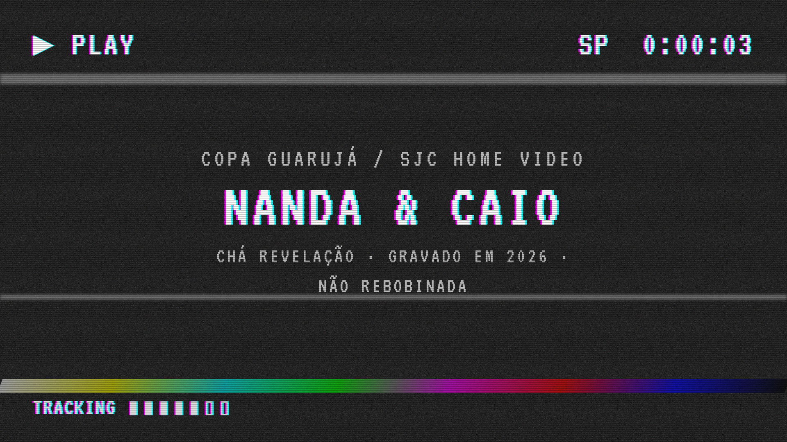
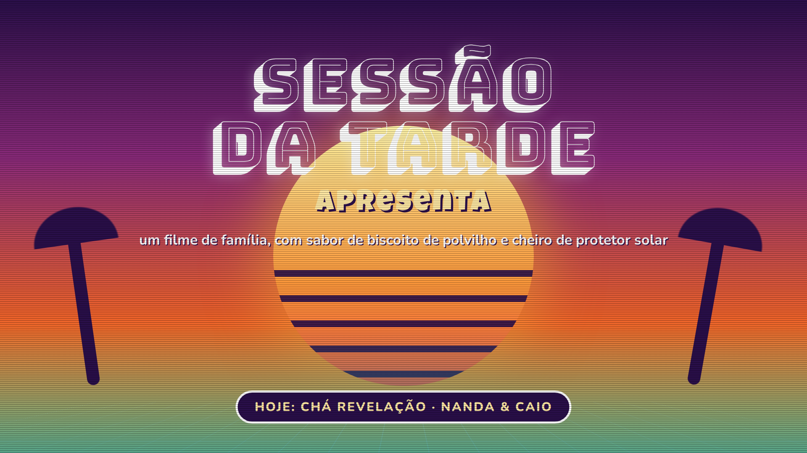
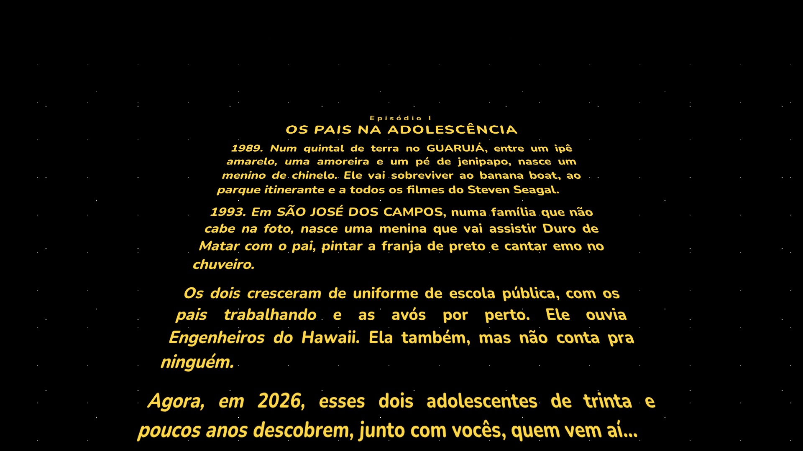
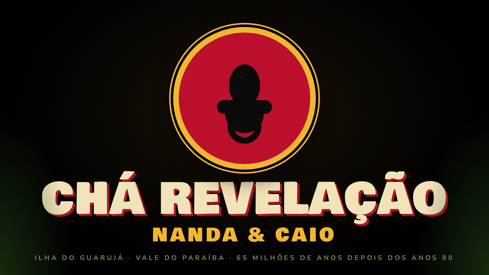
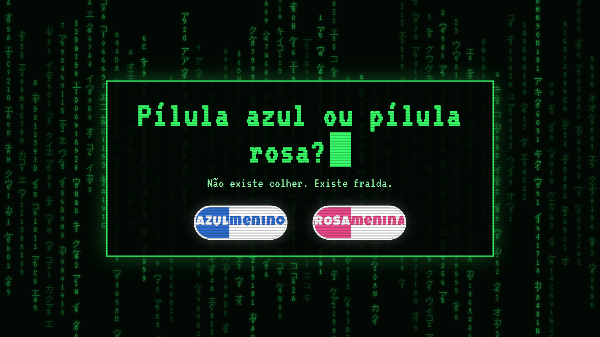
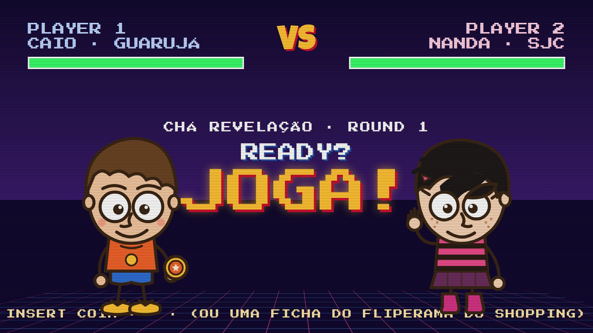

Abertura · roda depois do play, antes do jogo · ~60 segundos no totalStoryboard da abertura

1. A fita entraChiado, "PLAY ▶", tracking. 5 s · som de videocassete engolindo a fita.

2. Sessão da Tarde apresentaPôr do sol, coqueiros, letreiro cromado. 6 s

3. Letreiro Star WarsA história dos dois: 1989 Guarujá, 1993 SJC, emo, Engenheiros. 30 s · pode pular com um clique.

4. Título Jurassic ParkLogo com chupeta, trovão, título surge por trás. 6 s

5. MatrixChuva de código, "pílula azul ou rosa?". 6 s

6. Fliperama: READY? JOGA!Player 1 vs Player 2, e corta pro tabuleiro. 5 s
Cada quadro é uma cena em HTML/CSS animada (sem vídeo), então fica leve, nítida em qualquer projetor e fácil de ajustar o texto.